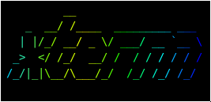

COS Senior Project
Martin Nestorov
Analysis of process-scheduling algorithms
comparison and contrast
The purpose of this project is to analyze and compare these different algorithms, to show their strengths and weaknesses.
Specification and Analysis
I've set out a few goals with this
I want this project to be:
From a functional standpoint
- Simple interface
- Be responsive to all inputs
- Have at least 4 algorithms implemented
- Graphs for each algorithm performance
- Be robust!
And speaking non-functionally
- Fast and light
- Must have high code quality
- Be easy to build and port
Architecture of Software
Procedural system
Implementation and Technologies


Done until now
- FCFS
- SJF
- RR
Some demo code
void scheduler::fcfs() { average_wait_time = 0; pool::eval_prcs_prty(); auto pit = pool::ready_queue.begin(); while (pit != pool::ready_queue.end()) { exec(pit, pit->get_ttl()); dispatcher::context_switch(pit, pit->get_ttl()); PSAscreen::get().draw_process_exec(average_wait_time, *pit, pool::done_queue); } }
What is to be done
- CFS (linux scheduler)
- Multilevel Queue
- Priority inversion